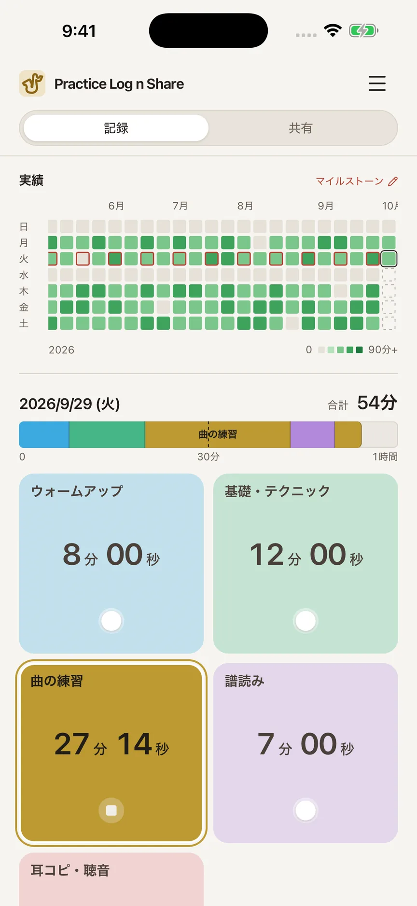
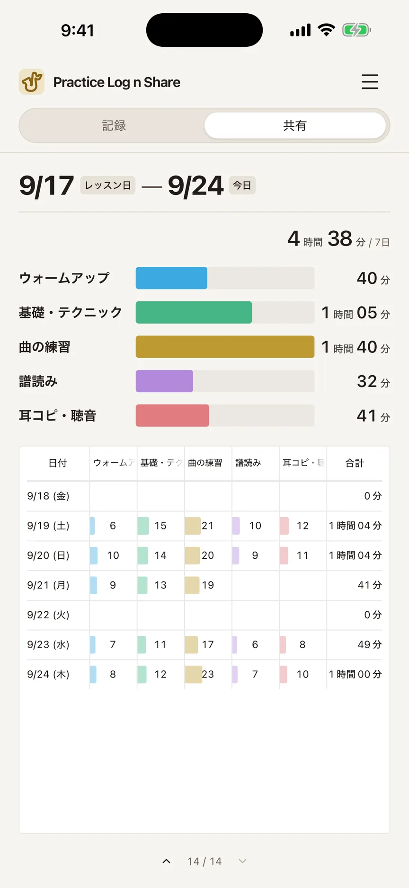
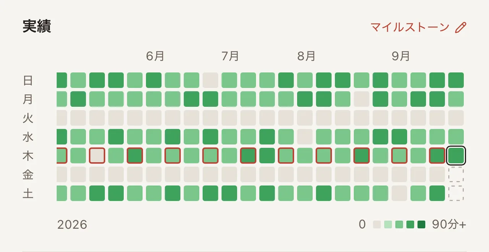
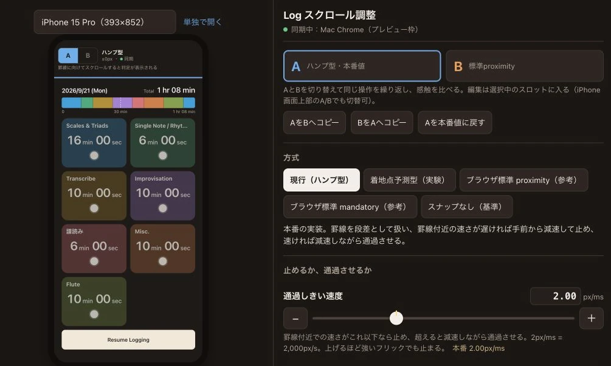
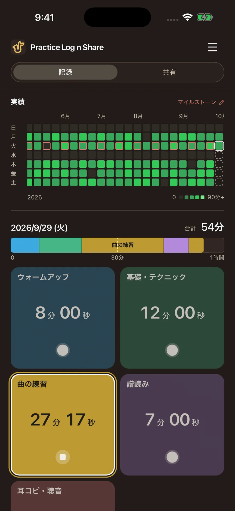

Practice Log n Share
September 2026
Überblick
Üben mit einem Fingertipp erfassen und im Unterricht denselben Bildschirm zeigen. Ich habe diese iPhone-App für mein eigenes Saxofonüben konzipiert, gestaltet und gemeinsam mit KI umgesetzt.


- Aufgaben
- Konzeption, UX/UI-Design und Umsetzung (mit Claude Code und Codex)
- Zeitraum
- September 2026
- Technik
- React · TypeScript; Swift (WKWebView, Live Activity, StoreKit, iCloud)
Webdemo ausprobieren (enthält meine eigenen Übeaufzeichnungen mit Stand vom 20. September 2026)
Ausgangspunkt — „Wie läuft das Üben?“: Darauf wusste ich keine Antwort
Im Unterricht alle zwei Wochen sagte „hauptsächlich Tonleitern“ wenig darüber aus, was ich wie lange geübt hatte. Mit dem Saxofon um den Hals ließ sich schwer in ein Papierheft schreiben. Die ausprobierten Zeiterfassungs-Apps waren dafür gedacht, die eigenen Daten allein nachzusehen.

Erfassen — Mit dem Instrument in der Hand, ein Fingertipp genügt
Beim Üben bediene ich nur die Kategoriekarten. Antippen startet die Messung, eine andere Karte wechselt die Kategorie und erneutes Antippen derselben Karte stoppt sie.
- 1 Verlauf
- Das bisherige Üben. Beim Öffnen als Erstes sichtbar.
- 2 Heute
- Reihenfolge und Verteilung. Nach einer Stunde voll.
- 3 Messung
- Nur diese Karte ist hell und weiß umrandet.
- 4 Karten
- Antippen zum Wechseln. Die Tageszeit steht groß da.
Ein Tag — Ein voller Balken bleibt voll
Der Tagesbalken füllt sich nach einer Stunde. Danach bildet die aktuelle Gesamtdauer den rechten Rand, damit in einem bereits gefüllten Balken keine Lücke zurückkehrt.
Heute geübt — 1 Std. 05 Min.
Gewählt
Verworfen
Aufbau — Alles sehen, vom ersten Tag an
Grüntöne zeigen die Übeintensität, rote Rahmen die Unterrichtstage. Horizontal lässt sich bis zum ersten erfassten Tag zurückscrollen. Mir war der Überblick über beliebig viele Jahre wichtiger als eine möglichst leichte Darstellung.


Entwicklung — Karten werden zum Bedienfeld fürs Üben
Ich baute die Ansichten anhand einer im Dialog mit KI erarbeiteten Spezifikation und probierte und überarbeitete sie immer wieder selbst. In einer frühen Webversion erkundete ich Erfassung und Teilen, bevor ich die App fürs iPhone umsetzte.


- Name und Zeit zusammen
- Ich platzierte die Tageszeit groß auf der Karte und verband so den Übeinhalt mit der dafür aufgewendeten Zeit.
- Der aktuelle Zustand auf einen Blick
- Ich hellte nur die gerade gemessene Karte auf und dunkelte die übrigen ab.
- Die Bedienung bleibt im Bildschirm
- Das Scrollen hält dort an, wo eine Kartenreihe vollständig in den Bildschirm passt.
Gegen Ende wiederholte ich etwa 15-mal einen Ablauf: Claude Code schlug mögliche Probleme vor, Codex prüfte und behob sie, und ich entschied über die Übernahme.
Bediengefühl — Wie das Scrollen stoppt, entscheide ich beim Ausprobieren
Ein Gefühl von „weich gleiten und sauber einrasten“ ließ sich mit Worten allein nicht herstellen. Gemeinsam mit KI baute ich ein Werkzeug zum direkten Wechseln von Verfahren und Werten, verglich fünf Verfahren auf einem echten Gerät und wählte das native Scroll-Snapping des Browsers.
Buckelmodell

Zielprognose

Nativ proximity
Gewählt
Nativ mandatory
Ohne Snapping


Als Produkt — Über das Üben hinaus
Das Erscheinungsbild folgt den Geräteeinstellungen. Übeaufzeichnungen werden lokal gespeichert und automatisch in iCloud gesichert.


Im Gebrauch — Die nächste Frage: Wie genau soll die Aufzeichnung sein?
Ich nutzte die App beim morgendlichen Üben und zeigte meinem Lehrer den Bildschirm. Seine Rückmeldung: Die Übeinhalte seien auf einen Blick erkennbar; mit den Tonleiterarten wäre die Aufzeichnung noch hilfreicher (sinngemäß). Ich erwäge eine weitere Ebene unter den Kategorien, um mehr Details bei einfacher Bedienung zu ermöglichen.
Materialien
Die Webdemo lässt Erfassung und Teilen ausprobieren. Sie enthält meine eigenen Übeaufzeichnungen mit Stand vom 20. September 2026. Änderungen werden nur im verwendeten Browser gespeichert.